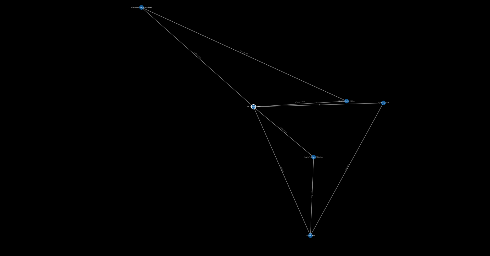
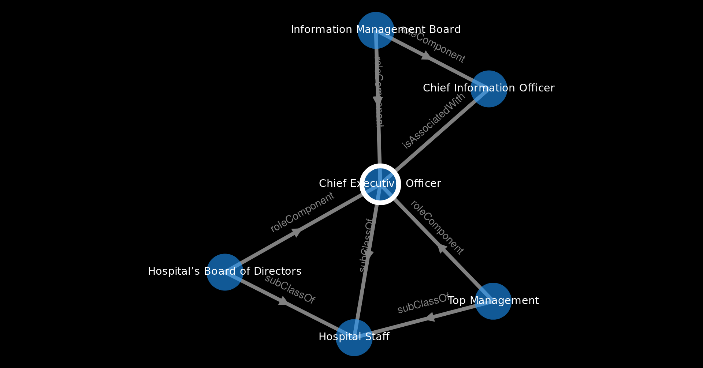
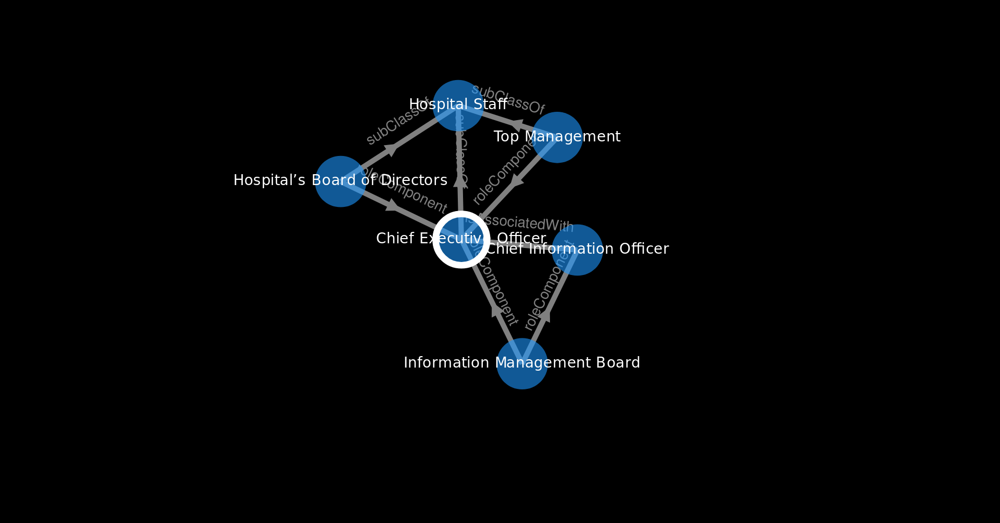

Shows all nodes that are connected via close matches to visible nodes.
Recalculate Layout
Hotkey: Ctrl+Alt+L
Reloads the layout. Recalculates the position of all selected nodes, or all visible nodes if there are not at least two selected nodes. Can take a while if
there are many visible nodes.
Tight Layout
Hotkey: Ctrl+Alt+T
You can use this for a more narrow view.
Compound Layout
Hotkey: Ctrl+Alt+C
Layout that tries to places strongly related resources next to each other. This uses Cytoscape's CoSE (Compound Spring Embedder) layout, which implements a
physiscs simulation to lay out graphs.
Reset View
Hotkey: Ctrl+Alt+R
Resets all the layout operations, makes all nodes and edges visible. Does not recalculate the layout. You may need to do that for a better experience, else
everything may be layed out on one single point.
Pictures

Original Layout

Tight Layout

Compound Layout